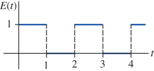
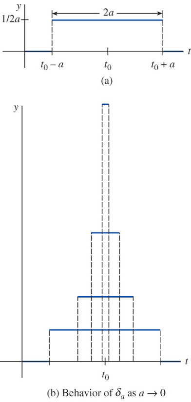

4 The Laplace Transform
4.1 Definition of the Laplace Transform
If \(f\) be a function defined for \(t \geq 0\), \(~\)then the integral
\[\mathcal{L}\{f(t)\} =\int_0^\infty f(t) e^{-st}\, dt =F(s)\]
is the Laplace Transform of \(~f\) provided the integral converges. The result is a function of \(s\)
\(~\)
Example \(\,\) Evaluate \(\mathcal{L}\{1\}\), \(~\mathcal{L}\{t\}\), \(~\)and \(~\mathcal{L}\{e^{-3t}\}\)
\(~\)
Example \(\,\) Evaluate \(\mathcal{L}\{f(t)\}~\) for \(~\displaystyle f(t) = \left\{\begin{matrix} 0, & 0 \leq t < 3\\ 2, & \phantom{0 \leq }\; t \geq 3 \end{matrix}\right.\)
\(~\)
\(\mathcal{L}\) is a linear transform
\[\mathcal{L}\{\alpha f(t) +\beta g(t)\} = \alpha \mathcal{L} \{f(t)\} +\beta\mathcal{L}\{g(t)\} =\alpha F(s) +\beta G(s)\]
\(~\)
Example \(\,\) Find \(\mathcal{L}\{f(t)\}\) by first using an appropriate trigonometric identity \(~f(t)=\sin^2 2t\)
\(~\)
Example \(\,\) Find \(\mathcal{L}\{f(t)\}\)
\(~f(t)=\left\{\begin{matrix} -1, & 0 \leq t < 1\\ \phantom{-}1, & t \geq 1\quad\;\; \end{matrix}\right.\)
\(~f(t)=\left\{\begin{matrix} \phantom{-}t, & 0 \leq t < 1\\ \phantom{-}1, & t \geq 1\quad\;\; \end{matrix}\right.\)
\(~f(t)=\left\{\begin{matrix} \sin t,& 0 \leq t < \pi\\ 0,& t \geq \pi \quad\;\; \end{matrix}\right.\)
\(~\)
Example \(\,\) Find \(\mathcal{L}\{f(t)\}\)
\(~f(t)=e^{t+7}\)
\(~f(t)=e^t \cos t\)
\(~f(t)=t\cos t\)
\(~f(t)=\sin 3t \cos 3t\)
\(~f(t)=\sin^4 t\)
\(~\)
4.2 The Inverse Transform and Transforms of Derivatives
If \(F(s)\) represents the Laplace transform of \(~f(t)\), \(~\)then \(f(t)\) is the inverse Laplace transform of \(F(s)\)
\[f(t)=\mathcal{L}^{-1}\{F(s)\}\]
\(\mathcal{L}^{-1}\) is a linear transform
\[\mathcal{L}^{-1}\{\alpha F(s) +\beta G(s)\} = \alpha \mathcal{L}^{-1} \{F(s)\} +\beta\mathcal{L}^{-1}\{G(s)\} =\alpha f(t) +\beta g(t)\]
\(~\)
Example \(\,\) Find the given inverse transform
\(\displaystyle \mathcal{L}^{-1} \left\{ \frac{1}{s^3} \right\}\)
\(~\)
\(\displaystyle \mathcal{L}^{-1} \left\{ \frac{1}{s^2} - \frac{48}{s^5} \right\}\)
\(~\)
\(\displaystyle \mathcal{L}^{-1} \left\{ \frac{(s+1)^3}{s^4} \right\}\)
\(\displaystyle \mathcal{L}^{-1} \left\{ \frac{1}{4s^2+1} \right\}\)
\(~\)
\(\displaystyle \mathcal{L}^{-1} \left\{ \frac{s+1}{s^2+2} \right\}\)
\(~\)
Example \(\,\) Evaluate \(\displaystyle\mathcal{L}^{-1}\left\{\frac{-2s +6}{s^2 +4}\right\}\)
\(~\)
Transforms of derivatives
\[ \begin{aligned} \mathcal{L}\{f'(t)\} &= sF(s) -f(0)\\ \mathcal{L}\{f''(t)\} &= s^2F(s) -sf(0) -f'(0)\\ &\; \vdots \end{aligned}\]
\(\displaystyle\mathcal{L}\left\{\frac{d^n f}{dt^n}\right\}\) depends on \(F(s)=\mathcal{L}\{f(t)\}\) and the \(n-1\) derivatives of \(~f(t)\) evaluated at \(t=0\)
If \(~f\) is piecewise continuous on \([0, \infty]\) and of exponential order, then
\[\lim_{s \to \infty} \mathcal{L}\{f(t)\}=0\]
The Laplace transform of a linear DE with constant coefficients becomes an algebraic equation in \(Y(s)\)
\(~\)
Example \(\,\) Use the Laplace transform to solve the IVP
\[\frac{dy}{dt} +3y = 13\sin 2t, \;y(0)=6\]
\(~\)
Example \(\,\) Use the Laplace transform to solve the given initial-value problem
\(~y''+y=\sqrt{2} \sin \sqrt{2}t, \;\;y(0)=10,\;y'(0)=0\)
\(~2y'''+3y''-3y'-2y=e^{-t}, \;\;y(0)=0, \;y'(0)=0, \; y''(0)=1\)
\(~\)
4.3 Translation Theorems
First Translation Theorem
If \(\mathcal{L}\{f(t)\}=F(s)~\) and \(~a\) is any real number, \(~\)then
\[\mathcal{L}\{e^{-at}f(t)\}=F(s+a)\]
\(~\)
Example \(\,\) Evaluate \(\mathcal{L}\{e^{-2t}\cos 4t\}\) and \(\displaystyle\mathcal{L}^{-1}\left\{\frac{2s +5}{(s +3)^2}\right\}\)
\(~\)
Second Translation Theorem
If \(\mathcal{L}\{f(t)\}=F(s)~\) and \(~a >0\), then
\[\mathcal{L}\{f(t -a)\mathcal{U}(t -a)\}=e^{-as}F(s)\]
Alternative Form
\[ \begin{aligned} \mathcal{L}\{g(t)\mathcal{U}(t -a)\} &= {\small\int_a^\infty e^{-st} g(t)\,dt}\\ &={\small \int_0^\infty e^{-s(t'+a)} g(t' +a) \,dt'} \\&= e^{-as} \mathcal{L}\{g(t+a)\} \end{aligned}\]
\(~\)
Example \(\,\) Find either \(~F(s)\) or \(~f(t)\)
\(\mathcal{L}\{ te^{10t} \}\)
\(\mathcal{L}\{ t^{10}e^{-7t}\}\)
\(\mathcal{L}\{ e^t \sin 3t \}\)
\(\displaystyle \mathcal{L}^{-1} \left\{ \frac{s}{(s+1)^2} \right\}\)
\(\displaystyle \mathcal{L}^{-1} \left\{ \frac{2s-1}{s^2(s+1)^3} \right\}\)
\(~\)
Example \(\,\) Solve \(~y' +y = f(t)\), \(~\)\(y(0)=5\), where
\[f(t) = \begin{cases} 0, & 0 \leq t < \pi\\ 3\cos t ,& t \geq \pi \end{cases}\]
\(~\)
4.4 Additional Operational Properties
Derivatives of Transforms: \(~\) If \(F(s)=\mathcal{L}\{f(t)\}~\) and \(n=1,2,\cdots,\) then
\[\mathcal{L}\{t^nf(t)\}=(-1)^n \frac{d^n}{ds^n} F(s)\]
\(~\)
Convolution Theorem: \(\,\) \(\displaystyle f*g=\int_0^t f(\tau)g(t -\tau)\, d\tau\)
\[\mathcal{L}\{f*g\}=\mathcal{L}\{f(t)\} \mathcal{L}\{g(t)\} =F(s) G(s)\]
\(~\)
Transform of a Periodic Function: \(~\) \(f(t+T)=f(t)\)
\[\mathcal{L}\{f(t)\}=\frac{1}{1-e^{-sT}} \int_0^T e^{-st} f(t) \,dt\]
\(~\)
Example \(\,\) Evaluate \(~\mathcal{L}\{t\sin \omega t\}\)
\(~\)
Example \(\,\) Solve \(~x'' +16x =\cos 4t, \; x(0)=1, \; x'(0)=1\)
\(~\)
Example \(\,\) Evaluate \(\displaystyle\mathcal{L}^{-1}\left\{\frac{1}{(s^2 +\omega^2)^2}\right\}\)
\(~\)
Example \(\,\) Evaluate \(\displaystyle\mathcal{L} \left\{ \int_0^t f(\tau)\, d\tau \right\}\)
\(~\)
Example \(\,\) Solve \(\displaystyle \,f(t) =3t^2 -e^{-t} -\int_0^t f(\tau)\, e^{t -\tau}\, d\tau\;\) for \(f(t)\)
\(~\)
Example \(\,\) Find the Laplace transform of the periodic function

\[\scriptsize\mathcal{L}\{E(t)\}=\frac{1}{1 -e^{-2s}} \int_0^2 e^{-st} E(t)\,dt=\frac{1}{s(1 +e^{-s})}\]
\(~\)
Example \(\,\) Evaluate the given Laplace transform
\(~\mathcal{L}\left\{ te^{-10t} \right\}\)
\(~\mathcal{L}\left\{ t\cos 2t \right\}\)
\(~\mathcal{L}\left\{ te^{2t}\sin 6t \right\}\)
\(~\)
Example \(\,\) Use the Laplace transform to solve the given initial-value problem
\(~y'+y=t \sin t, \;y(0)=0\)
\(~y''+9y=\cos 3t, \;y(0)=2, \;y'(0)=5\)
\(~\)
Example \(\,\) Find the convolution \(~f*g\) of the given functions. After integrating find the Laplace transform \(~f*g\)
\(~f(t)=4t, \;g(t)=3t^2\)
\(~f(t)=e^{-t}, \;g(t)=e^t\)
\(~\)
Example \(\,\) Find the Laplace transform
- \(~\mathcal{L} \left\{ e^{-t}* e^t \cos t \right\}\)
\(~\)
Example \(\,\) Evaluate the given inverse transform
- \(~\displaystyle \mathcal{L}^{-1} \left\{ \frac{1}{s^3(s-1)} \right\}\)
\(~\)
Example \(\,\) Use the Laplace transform to solve the given integral or integrodifferential equation
\(~\displaystyle f(t) +2\int_0^t f(\tau)\cos (t-\tau)\,d\tau=4e^{-t}+\sin t\)
\(~\displaystyle \frac{dy}{dt}=10-\int_0^t e^{-4\tau} y(t-\tau)\,d\tau, \;y(0)=5\)
\(~\)
Example \(\,\) The Laplace transform \(\mathcal{L} \left\{ e^{-t^2} \right\}\) exists, but without finding it solve the initial-value problem
- \(~y''+9y=3e^{-t^2}, \;\;y(0)=0, \;y'(0)=0\)
\(~\)
Example \(\,\) Solve the integral equation
- \(~\displaystyle f(t)=e^t+e^t \int_0^t e^{-\tau} f(\tau)\, d\tau\)
\(~\)
4.5 The Dirac Delta Function
\[\textbf{Unit Pulse}\]
\[\small \delta_a(t-t_0) = \left\{\begin{matrix} 0, & \;\;\;\;\;\;\; 0 \leq t < t_0 -a\\ \frac{1}{2a}, & t_0 -a \leq t \leq t_0 +a\\ 0, & \;\; t \geq t_0 +a \end{matrix}\right.\]

The Dirac Delta Function
\[ \begin{aligned} \delta(t -t_0) &= \lim_{a \to 0} \,\delta_a(t -t_0) \\ &\Downarrow \\ \mathcal{L}\{\delta(t -t_0)\} &= \lim_{a \to 0} \mathcal{L}\{\delta_a(t -t_0)\}=e^{-st_0}\lim_{a \to 0} \left(\frac{e^{sa} -e^{-sa}}{2sa}\right)\\ &= e^{-st_0} \end{aligned}\]
When \(~t_0=0\), \(~\)\(\displaystyle\mathcal{L}\{\delta(t)\}=1\)
\(~\)
Example \(\,\) Solve \(~y'' +y=4\delta(t -2\pi)\) \(~\)subject to \(y(0)=1, \;y'(0)=0\)
\(~\)
Example \(\,\) Use the Laplace transform to solve the given differential equation subject to the indicated initial conditions
\(~y'-3y=\delta(t-2), \;y(0)=0\)
\(~y''+y=\delta(t-2\pi), \;y(0)=0, \,y'(0)=1\)
\(~y''+y=\delta(t-\pi/2)+\delta(t-3\pi/2),\;y(0)=0,\,y'(0)=0\)
\(~\)
4.6 Systems of Linear Differential Equations
- When initial conditions are specified, \(~\)the Laplace transform reduces a system of linear DEs to a set of simultaneous algebraic equations in the transformed functions
\(~\)
Example \(\,\) Double Pendulum

Linearization \(\,\) For small displacements \(\theta_1\) and \(\theta_2\),
\[ \begin{aligned} (m_1 +m_2) l_1 \ddot{\theta_1} +m_2 l_2 \ddot{\theta_2} +(m_1 +m_2) g \,\theta_1 &= 0\\ l_2 \ddot{\theta_2} +l_1 \ddot{\theta_1} +g \,\theta_2 &= 0 \end{aligned}\]
Solve the system when
\[m_1=3, m_2=1, l_1=l_2=5, \text{ and } ~g=10\]
\[\theta_1(0) = 1, \theta_2(0)=-1, \dot{\theta_1}(0)=0, \dot{\theta_2}(0)=0\]
\(~\)
Example \(\,\) Use the Laplace transform to solve the given system of differential equations
\[ \begin{aligned} \dot{x} &= -x+y \\ \dot{y} &= 2x, \;\;x(0)=0,\;y(0)=1 \end{aligned}\]
\[ \begin{aligned} \dot{x} &= x-2y \\ \dot{y} &= 5x-y, \;\;x(0)=-1,\;y(0)=2 \end{aligned}\]
\[ \begin{aligned} 2&\dot{x}+\dot{y} -2x= 1 \\ &\dot{x}+\dot{y} -3x -3y= 2, \;\;x(0)=0,\;y(0)=0 \end{aligned}\]
Worked Exercises
1. \(\phantom{1}\) Solve the system
\[\begin{aligned} x' +y &= t\\ 4x +y' &=0 \end{aligned} \quad \text{at} \;\; x(0)=0, \;y(0)=2\]
\(~\)
Solution
Step 1: Take Laplace transforms
\[\scriptsize \mathcal{L}\{x’\} + Y(s) = \mathcal{L}\{t\} \Rightarrow sX(s) - x(0) + Y(s) = \frac{1}{s^2} \Rightarrow sX(s) + Y(s) = \frac{1}{s^2} \tag{a}\label{ch04:e1}\]
\[\scriptsize 4X(s) + \mathcal{L}\{y’\} = 0 \Rightarrow 4X(s) + (sY(s) - y(0)) = 0 \Rightarrow 4X(s) + sY(s) = 2\tag{b}\label{ch04:e2}\]
Step 2: Solve the algebraic system
From equation \(\eqref{ch04:e1}\):
\[Y(s) = \frac{1}{s^2} - sX(s)\]
Substitute into equation \(\eqref{ch04:e2}\):
\[4X(s) + s\left( \frac{1}{s^2} - sX(s) \right) = 2 \Rightarrow X(s) = \frac{2s - 1}{s(4 - s^2)}\]
Then, from \(\eqref{ch04:e1}\):
\[ Y(s) = \frac{1}{s^2} - sX(s) = \frac{1}{s^2} - \frac{2s - 1}{4 - s^2}\]
Step 3: Partial fraction decomposition
For \(X(s)\),
\[ X(s) = \frac{-1}{4s} + \frac{3}{8(2 - s)} + \frac{5}{8(2 + s)}\]
For \(Y(s)\),
\[ Y(s) = \frac{1}{s^2} + \frac{3}{4(s - 2)} + \frac{5}{4(s + 2)}\]
Step 4: Inverse Laplace Transform
\[ \begin{aligned} x(t) &= -\frac{1}{4} -\frac{3}{8} e^{2t} + \frac{5}{8} e^{-2t} \\ y(t) &= t + \frac{3}{4} e^{2t} + \frac{5}{4} e^{-2t} \end{aligned}\]
\(~\)
2. \(~\) Solve the system
\[\begin{aligned} x'' +y'' &= e^{2t}\\ 2x' +y'' &=-e^{2t} \end{aligned} \quad \text{at} \;\; x(0)=0, \;y(0)=0, \;x'(0)=0, \;y'(0)=0\]
\(~\)
Solution
Step 1: Apply Laplace Transforms
\[\mathcal{L}\{x’’ + y’’\} = \mathcal{L}\{e^{2t}\} \Rightarrow s^2 X(s) + s^2 Y(s) = \frac{1}{s - 2}\tag{a}\label{eq:ch04e3}\]
\[\mathcal{L}\{2x’ + y’’\} = \mathcal{L}\{-e^{2t}\} \Rightarrow 2sX(s) + s^2 Y(s) = -\frac{1}{s - 2} \tag{b}\label{eq:ch04e4}\]
Step 2: Solve the system algebraically
Subtract \(\eqref{eq:ch04e4}\) from \(\eqref{eq:ch04e3}\):
\[\begin{aligned}(s^2 X &+ s^2 Y) - (2s X + s^2 Y) = \frac{1}{s - 2} - \left(-\frac{1}{s - 2}\right) \\ &\Rightarrow X(s) = \frac{2}{(s - 2)(s^2 - 2s)} \end{aligned} \]
Now substitute into \(\eqref{eq:ch04e3}\) to find \(Y(s)\):
\[ Y(s) = \frac{1}{s^2(s - 2)} - \frac{2}{(s - 2)(s^2 - 2s)}\]
Step 3: Simplify and compute inverse Laplace transforms
\[X(s) = \frac{2}{(s - 2)(s^2 - 2s)} = \frac{1}{2s} - \frac{1}{2(s - 2)} + \frac{1}{(s - 2)^2}\]
Take inverse Laplace:
\[ x(t) = \frac{1}{2} - \frac{1}{2} e^{2t} + t e^{2t} = \frac{1}{2}(1 - e^{2t}) + t e^{2t}\]
Recall:
\[ Y(s) = \frac{1}{s^2(s - 2)} - \frac{2}{s(s - 2)^2} = -\frac{5}{4s} - \frac{1}{2s^2} + \frac{5}{4(s - 2)} - \frac{2}{(s - 2)^2}\]
Thus:
\[ y(t) = -\frac{5}{4} - \frac{1}{2} t + \frac{5}{4} e^{2t} - 2t e^{2t}\]
3. \((a)\) Show that \(y = e^{-t^2}\) is a solution of the initial value problem
\[ \frac{dy}{dt} +2ty=0,\;\;y(0)=1 \]
\((b)\) Find \(Y(s)=\mathcal{L}\left[ e^{-t^2} \right]\) by applying the Laplace transform to the above differential equation
\[\phantom{**}\] Hint) \(\displaystyle \mathrm{erfc}(t) = \frac{2}{\sqrt{\pi}} \int_t^\infty \, e^{-u^2}\, du\)
Solution (a)
Step 1: \(~\) Plug into the differential equation
Let \(y(t) = e^{-t^2}\)
Then:
\[\frac{dy}{dt} = \frac{d}{dt}(e^{-t^2}) = -2t e^{-t^2}\]
Now substitute into the equation:
\[\frac{dy}{dt} + 2t y = -2t e^{-t^2} + 2t e^{-t^2} = 0\]
Step 2: \(~\) Check initial condition
\[y(0) = e^{0} = 1\]
Solution (b)
Step 1: \(~\) Take Laplace transforms
Let \(Y(s) = \mathcal{L}\{y(t)\}\)
Apply Laplace transform:
\[\mathcal{L}\left\{ \frac{dy}{dt} + 2t y \right\} = sY(s) - y(0) - 2 \frac{dY}{ds} = 0\]
Given \(y(0) = 1\), the transformed equation becomes:
\[\frac{dY}{ds} = \frac{1}{2}\left[sY(s) - 1\right]\]
Step 2: \(~\) Solve the first-order linear ODE
We solve:
\[\frac{dY}{ds} = \frac{1}{2}sY(s) - \frac{1}{2}\]
This is a first-order linear ODE for \(Y(s)\). Standard form:
\[\frac{dY}{ds} - \frac{1}{2}sY = -\frac{1}{2}\]
Use integrating factor:
\[\mu(s) = e^{-\frac{1}{4}s^2}\]
Multiply both sides:
\[e^{-\frac{1}{4}s^2} \frac{dY}{ds} - \frac{1}{2}s e^{-\frac{1}{4}s^2} Y = -\frac{1}{2} e^{-\frac{1}{4}s^2}\]
LHS becomes derivative of the product:
\[\frac{d}{ds} \left( e^{-\frac{1}{4}s^2} Y \right) = -\frac{1}{2} e^{-\frac{1}{4}s^2}\]
Now integrate both sides:
\[\int \frac{d}{ds} \left( e^{-\frac{1}{4}s^2} Y \right) ds = \int -\frac{1}{2} e^{-\frac{1}{4}s^2} ds\]
\[e^{-\frac{1}{4}s^2} Y(s) = -\frac{1}{2} \int e^{-\frac{1}{4}s^2} ds + C\]
There’s no elementary antiderivative for \(e^{-\frac{1}{4}s^2}\), so we leave the integral unevaluated:
\[Y(s) = e^{\frac{1}{4}s^2} \left( C - \frac{1}{2} \int e^{-\frac{1}{4}s^2} ds \right)\]
The constant \(C\) that appears when solving a differential equation via the Laplace transform is determined by the initial condition (e.g., \(y(0) = 1\))
\[C = \frac{\sqrt{\pi}}{2} \operatorname{erfc}\left( \frac{s}{2} \right) + \frac{1}{2} \int e^{-s^2/4} ds\]
Then:
\[ \mathcal{L} \{ e^{-t^2} \} = \frac{\sqrt{\pi}}{2} e^{\frac{s^2}{4}} \operatorname{erfc}\left( \frac{s}{2} \right) \]
\(~\)
4. \(~\) One definition of the gamma function \(\Gamma(\alpha)\) is given by the improper integral
\[ \Gamma(\alpha) = \int_0^\infty t^{\alpha-1} \,e^{-t} \, dt, \;\alpha > 0 \]
\((a)\) Use this definition to show that \(\Gamma(\alpha+1) = \alpha \Gamma(\alpha)\)
\((b)\) and find that \(\mathcal{L}\left[ t^\alpha \right]\)
Solution (a)
Start with \(\Gamma(\alpha + 1)\)
\[ \Gamma(\alpha + 1) = \int_0^\infty t^{\alpha} e^{-t} dt \]
We’ll use integration by parts:
Let \(u = t^\alpha \Rightarrow du = \alpha t^{\alpha - 1} dt\)
Let \(dv = e^{-t} dt \Rightarrow v = -e^{-t}\)
Then:
\[ \begin{aligned} \Gamma(\alpha + 1) &= \left. -t^{\alpha} e^{-t} \right|_0^\infty + \int_0^\infty \alpha t^{\alpha - 1} e^{-t} dt \\ &= 0 + \alpha \int_0^\infty t^{\alpha - 1} e^{-t} dt \\ &= \alpha \Gamma(\alpha) \end{aligned}\]
Solution (b)
\[ \mathcal{L} \{ t^\alpha \} = \int_0^\infty e^{-s t} t^\alpha dt \]
Make substitution \(\displaystyle u = s t \Rightarrow t = \frac{u}{s}, \; dt = \frac{du}{s}\)
Then:
\[ \begin{aligned} \mathcal{L} \{ t^\alpha \} &= \int_0^\infty e^{-s t} t^\alpha dt = \int_0^\infty e^{-u} \left( \frac{u}{s} \right)^\alpha \cdot \frac{du}{s} \\ &= \frac{1}{s^{\alpha + 1}} \int_0^\infty u^\alpha e^{-u} du \\ &= \frac{1}{s^{\alpha + 1}} \Gamma(\alpha + 1) \end{aligned}\]
\(~\)
5. \(~\) Solve the given differential equation
\[y''+2y'+y=(t-1) u(t-1) +\delta(t-5), \;y(0)=0, \;y'(0)=0\]
Solution
\[\begin{aligned} y''+2y'+y=(t-1) u(t-1) &+\delta(t-5), \;\;y(0)=0,\; y'(0)=0 \\ &\Downarrow \\ (s^2 +2s +1)\,Y &= \frac{e^{-s}}{s^2} + e^{-5s}\\ &\Downarrow \\ Y = \frac{e^{-s}}{s^2(s+1)^2} + \frac{e^{-5s}}{(s+1)^2} &= \left[ -\frac{2}{s} +\frac{1}{s^2} +\frac{2}{s+1} +\frac{1}{(s+1)^2}\right] e^{-s} + \frac{e^{-5s}}{(s+1)^2} \\ &\Downarrow \\ \color{red}{y(t) = \left[-3 +t +(t+1)e^{-(t-1)} \right]} \; & \color{red}{\;u(t -1) +(t-5) e^{-(t-5)} u(t-5)} \end{aligned}\]
\(~\)
6. \(~\) Solve \(~y'' + 4y' + 3y =e^t \delta (t-1), \;\;y(0)=0, \;y'(0)=2\)
Solution
\[ \begin{aligned} y'' + 4y' + 3y &= e^t \delta (t-1), \;\;y(0)=0, \;y'(0)=2\\ &\Downarrow \\ (s^2 + 4s +3) Y(s) - 2 &= e e^{-s} \\ Y(s) &= \frac{2}{(s+1)(s+3)} + \frac{e}{(s+1)(s+3)} e^{-s}\\ &\Downarrow \\ \color{red}{y(t)} &\color{red}{= e^{-t} - e^{-3t} +\frac{e}{2} \left[e^{-(t-1)} - e^{-3(t-1)}\right] u(t-1)} \end{aligned}\]
\(~\)
7. \(~\) Use the Laplace transform to find the numerical value of the improper integral \[\int_0^\infty t e^{-2t} \sin 4t \,dt\]
Solution
\[\begin{aligned} F(s) &= \mathcal{L} \left[ t\, \sin 4t\right ] = \int_0^\infty t\, \sin 4t \, e^{-st} \,dt\\ &\Downarrow \\ F(s) &= -\frac{d}{ds} \left(\frac{4}{s^2 + 4^2} \right) = \frac{8s}{(s^2 + 4^2)^2}\\ &\Downarrow \\ \color{red}{F(2)} \; &\color{red}{= \frac{1}{25}} \end{aligned}\]